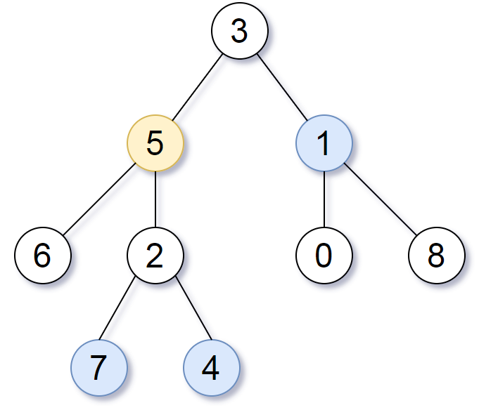

863. 二叉树中所有距离为 K 的结点
DFS 给每个结点记父指针，把树补成无向图；再从 target 出发 BFS，三个方向（左、右、父）走 K 层，队列里剩下的就是答案。
思路
- 树里只有「向下」的边，先 DFS 一遍建
parent哈希表，孩子就能向上走了。 - 从
target出发 BFS：扩展每个结点时看三个邻居——左孩子、右孩子、父结点；用visited防止走回头路。 - 每弹完一层
k--，走满 K 层时队列里恰好是距离为 K 的全部结点；K 比树还大就返回空。
图解
最优解
1import java.util.*;2 3class Solution {4 public List<Integer> distanceK(TreeNode root, TreeNode target, int k) {5 // DFS 一遍给每个结点记下父结点，树就补成了无向图6 Map<TreeNode, TreeNode> parent = new HashMap<>();7 dfs(root, null, parent);8 9 // 从 target 出发 BFS，三个方向：左孩子、右孩子、父结点10 Queue<TreeNode> queue = new ArrayDeque<>();11 Set<TreeNode> visited = new HashSet<>();12 queue.add(target);13 visited.add(target);14 while (!queue.isEmpty() && k > 0) {15 k--;16 int size = queue.size();17 while (size-- > 0) {18 TreeNode cur = queue.poll();19 if (cur.left != null && visited.add(cur.left)) queue.add(cur.left);20 if (cur.right != null && visited.add(cur.right)) queue.add(cur.right);21 // 向上走全靠这一步：沿父指针也能扩展22 TreeNode p = parent.get(cur);23 if (p != null && visited.add(p)) queue.add(p);24 }25 }26 // k 层走完，队列里剩下的就是距离恰好为 k 的结点27 List<Integer> ans = new ArrayList<>();28 for (TreeNode node : queue) ans.add(node.val);29 return ans;30 }31 32 private void dfs(TreeNode node, TreeNode fa, Map<TreeNode, TreeNode> parent) {33 if (node == null) return;34 parent.put(node, fa);35 dfs(node.left, node, parent);36 dfs(node.right, node, parent);37 }38}题目
给定一个二叉树（具有根结点 root）， 一个目标结点 target ，和一个整数值 k ，返回到目标结点 target 距离为 k 的所有结点的值的数组。
答案可以以 任何顺序 返回。
示例 1：

输入：root = [3,5,1,6,2,0,8,null,null,7,4], target = 5, k = 2 输出：[7,4,1] 解释：所求结点为与目标结点（值为 5）距离为 2 的结点，值分别为 7，4，以及 1
示例 2:
输入: root = [1], target = 1, k = 3 输出: []
提示:
- 节点数在
[1, 500]范围内 0 <= Node.val <= 500Node.val中所有值 不同- 目标结点
target是树上的结点。 0 <= k <= 1000
题面取自力扣当前版本。
数据快照 2026-11-04。题面版权归力扣所有，本站点仅供本人学习使用，请勿对外发布。